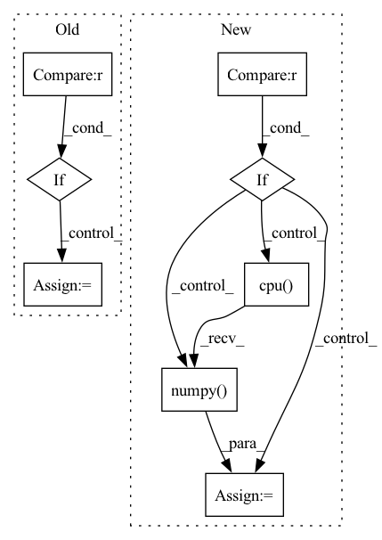

Pattern ID :35094
Before Change
bag_logits, bag_labels, bag_attn_list = self.compute_bag_labels_logits_and_attn_maps(batch)
if self.n_classes > 1 :
loss = self.loss_fn(bag_logits, bag_labels.long())
else:
loss = self.loss_fn(bag_logits.squeeze(1), bag_labels.float())
After Change
predicted_probs = predicted_probs.squeeze(dim=1)
results = dict()
if self.analyse_loss and stage in [ModelKey.TRAIN, ModelKey.VAL] :
loss_per_sample = self._compute_loss(self.loss_fn_no_reduction, bag_logits, bag_labels)
results[ResultsKey.LOSS_PER_SAMPLE] = loss_per_sample.detach().cpu().numpy()
bag_labels = bag_labels.view(-1, 1)
for metric_object in self.get_metrics_dict(stage).values():In pattern: SUPERPATTERN
Frequency: 3
Non-data size: 8
Instances Fragment ID: 100169064
Project Name: microsoft/hi-ml
Commit Name: e2c1ca1cb4d224378df8209befd08e7ebcc136d5
Time: 2022-10-12
Author: 37396332+kenza-bouzid@users.noreply.github.com
File Name: hi-ml-cpath/src/health_cpath/models/deepmil.py
M Class Name: BaseDeepMILModule
N Class Name: BaseDeepMILModule
M Method Name: _shared_step(4)
N Method Name: _shared_step(4)
M Parent Class: LightningModule
N Parent Class: LightningModule
M File Name: hi-ml-cpath/src/health_cpath/models/deepmil.py
N File Name: hi-ml-cpath/src/health_cpath/models/deepmil.py
M Start Line: 302
M End Line: 325
N Start Line: 311
N End Line: 334
Before Change
for i in range(world_size):
handle = pynvml.nvmlDeviceGetHandleByIndex(i)
meminfo = pynvml.nvmlDeviceGetMemoryInfo(handle)
if meminfo.free < total_size :
matched = True
break
if matched:After Change
Returns:
gathered (list[data]): a list of data gathered from each rank
if get_world_size(group=group) == 1 :
return [data]
tensor, group = _serialize_to_tensor(data, group)
size_list, tensor = _pad_tensors(tensor, group)
max_size = max(size_list)
tensor_list = [tensor.new_empty([max_size]) for _ in size_list]
dist.all_gather(tensor_list, tensor, group=group)
gathered = []
for size, tensor in zip(size_list, tensor_list):
buffer = tensor.cpu().numpy() .tobytes()[:size]
gathered.append(nncore.loads(buffer))
return gathered Fragment ID: 100169065
Project Name: yeliudev/nncore
Commit Name: c60692996f4316b5befe701efbc18a9ad7cc7ac1
Time: 2020-03-11
Author: goolhanrry@gmail.com
File Name: nncore/engine/comm.py
M Class Name: AnonimousClass
N Class Name: AnonimousClass
M Method Name: all_gather(2)
N Method Name: all_gather(1)
M Parent Class:
N Parent Class:
M File Name: nncore/engine/comm.py
N File Name: nncore/engine/comm.py
M Start Line: 47
M End Line: 78
N Start Line: 86
N End Line: 112
Before Change
diff_count = torch.sum(diff).item()
print("diff between unit_counts_bow", diff_count) if debug else None
if diff_count == 1.0 :
diff_numpy = diff.numpy()
index_list = np.where(diff_numpy >= 1.0)
print("index_list:", index_list) if debug else None
index = index_list[1][0]
After Change
diff_count = torch.sum(diff).item()
print("diff between unit_counts_bow", diff_count) if debug else None
if diff_count >= 1.0 :
print("diff:", diff) if debug else None
index = torch.nonzero(diff, as_tuple=True)[-1]
print("index:", index) if debug else None
index = index.detach().cpu().numpy() .tolist()
previous_bo.extend(index)
return previous_bo
Fragment ID: 100169068
Project Name: liuruoze/mini-alphastar
Commit Name: a115d8c35ded3fa3d608df5576d72a17cf941787
Time: 2021-12-10
Author: liuruoze@163.com
File Name: alphastarmini/lib/utils.py
M Class Name: AnonimousClass
N Class Name: AnonimousClass
M Method Name: calculate_build_order(3)
N Method Name: calculate_build_order(3)
M Parent Class:
N Parent Class:
M File Name: alphastarmini/lib/utils.py
N File Name: alphastarmini/lib/utils.py
M Start Line: 126
M End Line: 145
N Start Line: 111
N End Line: 135